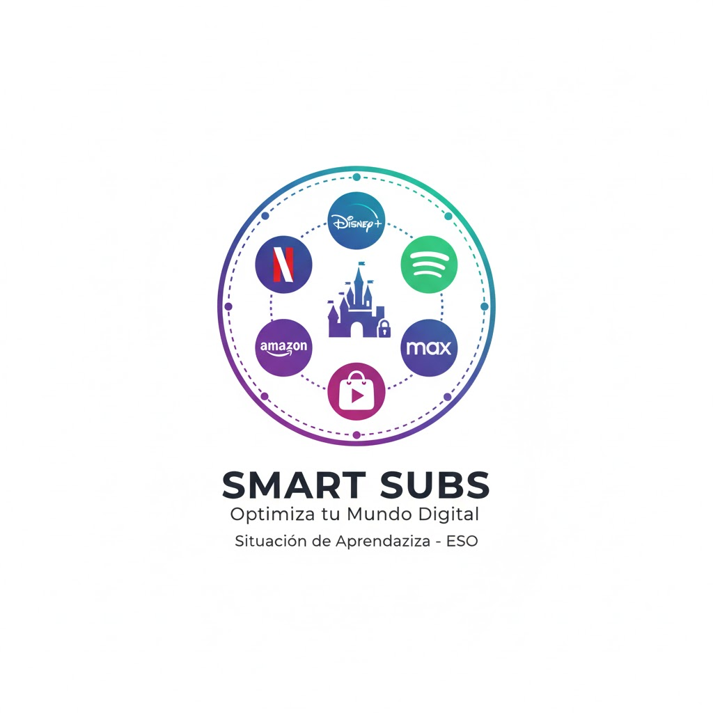

Datos identificativos
|
Título: SMART SUBS: Optimiza tu mundo digital. Etapa: Educación Secundaria Obligatoria (ESO). Curso: 2.º / 3.º (Adaptable). Área/Materia: Informática/Matemáticas Vinculación con otras materias:
|
 |
Taller de Situación de Aprendizaje: SMART SUBS
Profesor : Francisco Arcas Túnez
Máster en profesorado (Informática/Matemáticas)
Jose Antonio Javaloy Conesa 77988151G
Jesús Morales Morcillo, 48451480W
Antonio Campoy Torrecillas, 23331435M
Antonio David Mota Martínez, 45607741Y
Ginés Zamora Cegarra, 23301076Y
José Máximo Lorente Gomariz, 48756527T
Descripción y finalidad de los aprendizajes
La Situación de Aprendizaje Smart Subs nace con el propósito de empoderar al alumnado en la gestión de su identidad y economía digital. A través del análisis de las plataformas de contenido, se busca que el estudiante no solo sea un consumidor, sino que sepa gestionar,
Esta propuesta se conecta directamente con los siguientes Objetivos de Desarrollo Sostenible (ODS):
ODS 4 – Educación de calidad: Garantizar una educación inclusiva, equitativa y de calidad y promover oportunidades de aprendizaje durante toda la vida para todos, fomentando la alfabetización digital y financiera.
ODS 11 – Ciudades y comunidades sostenibles: Lograr que los asentamientos humanos sean inclusivos, seguros y sostenibles, promoviendo un acceso equitativo a la cultura digital.
ODS 12 – Producción y consumo responsables: Garantizar modalidades de consumo y producción sostenibles, educando en la toma de decisiones informadas para evitar el sobreconsumo y el gasto digital innecesario.
Temporalización y relación con la programación
Temporalización: * Duración estimada: 4 sesiones de 55 minutos.
Ubicación en el calendario: Segundo trimestre (coincidiendo con el bloque de Aritmética/Álgebra y el uso de software de aplicación).
Relación con la programación:
Esta SA se integra en el bloque de 'Consumo Responsable y Educación Financiera' dentro de la materia de Matemáticas.
En el área de Informática/Digitalización, se vincula con el bloque de 'Gestión y Tratamiento de la Información', cumpliendo con los objetivos de creación de contenidos y alfabetización mediática.